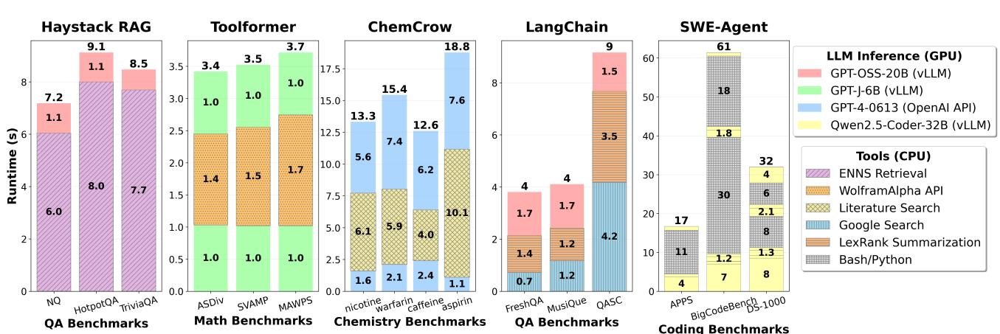
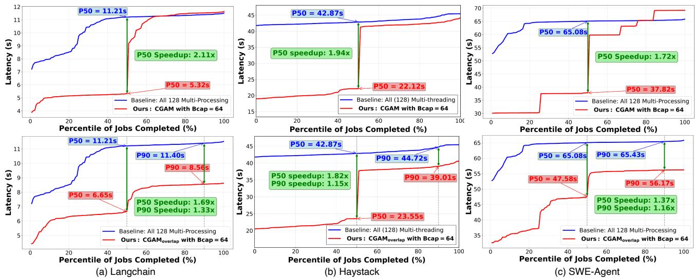
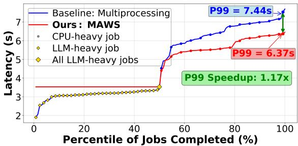
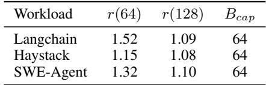
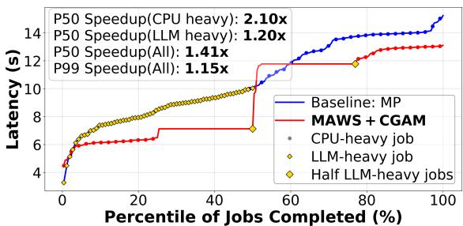

A CPU-CENTRIC PERSPECTIVE ON AGENTIC AI 论文解析¶
0. 论文基本信息¶
作者 (Authors): Ritik Raj, Hong Wang, Tushar Krishna
发表期刊/会议 (Journal/Conference): ArXiv
发表年份 (Publication Year): 2025
研究机构 (Affiliations): Georgia Institute of Technology, Atlanta, GA, USA, Intel, Santa Clara, CA, USA
1. 摘要¶
目的
- 从一个被长期忽视的 CPU-centric perspective 出发，系统性地表征和理解 Agentic AI 工作负载引入的系统瓶颈。
- 挑战传统AI优化中过度关注GPU的范式，揭示 CPU在工具处理、吞吐量和能耗方面 的关键影响，并提出针对性的优化方案。
方法
- 系统级表征：提出了三个正交的分类维度来刻画Agentic AI系统的多样性：
- Orchestrator-based (LLM-orchestrated vs. Host-orchestrated)
- Agentic Path (Static vs. Dynamic)
- Repetitiveness (Single-step vs. Multi-step)
 Figure 1. Characterization of agentic AI workloads on the basis of (a) Orchestrator (LLM and Host) (b) Agentic Path (Static and Dynamic) and (c) Repetitiveness (Single-step and Multi-step)
Figure 1. Characterization of agentic AI workloads on the basis of (a) Orchestrator (LLM and Host) (b) Agentic Path (Static and Dynamic) and (c) Repetitiveness (Single-step and Multi-step)
- 全栈剖析：基于上述表征，选取了五个具有代表性的Agentic AI工作负载（Haystack RAG, Toolformer, ChemCrow, Langchain, SWE-Agent），在配备 Intel Emerald Rapids CPU 和 NVIDIA B200 GPU 的先进系统上，对 latency, throughput, 和 energy 进行了全面剖析。
- 优化设计：根据剖析洞察，设计了两种调度优化策略：
- **CGAM **(CPU and GPU-Aware Micro-batching)：用于同质化工作负载。
- **MAWS **(Mixed Agentic Workload Scheduling)：用于异质化工作负载。
结果
- 延迟剖析：工具处理（在CPU上执行）是主要瓶颈，其延迟占比最高可达 90.6%。  Figure 2. (a) Haystack with ENNS retrieval on QA benchmarks (b) Toolformer with WolframAlpha API on Math benchmarks (c) Chemcrow with literature (Arxiv/Pubmed) search tool on Chemistry benchmarks (d) Langchain with web search and LexRank summarization tools on QA benchmarks (e) Mini-SWE-Agent with bash/Python execution tools on coding benchmarks
- 吞吐量瓶颈：Agentic AI的吞吐量受限于两类因素：
- CPU因素：核心过载（over-subscription）、缓存一致性（coherence）和同步开销。
- GPU因素：设备内存容量和带宽限制。
 Figure 4. (a) vLLM throughput saturation for GPT-OSS-20B model (b) Throughput saturation for various agentic workloads (c) Average time taken by different components in Langchain benchmark showing a critical CPU context switching bottleneck at batch size 128
Figure 4. (a) vLLM throughput saturation for GPT-OSS-20B model (b) Throughput saturation for various agentic workloads (c) Average time taken by different components in Langchain benchmark showing a critical CPU context switching bottleneck at batch size 128
- 能耗剖析：在大批次（batch size 128）场景下，CPU动态能耗占总动态能耗的比例高达 44%。
 Figure 5. CPU (AMD Threadripper) and GPU (Nvidia B200) dynamic energy consumption for Langchain workload
Figure 5. CPU (AMD Threadripper) and GPU (Nvidia B200) dynamic energy consumption for Langchain workload - 优化效果：所提出的优化方案显著提升了性能：
- CGAM 在同质化工作负载上实现了最高 2.1× 的 P50 延迟加速。
- MAWS 在异质化工作负载上实现了 1.41× 的 P50 延迟加速。  Figure 7. Comparison of CGAM and CGAMoverlap using Bcap = 64 against baseline (multi-processing or multi-threading) on (a) Langchain workload on FreshQA benchmark, (b) Haystack workload on NQ benchmark and (c) SWE-Agent on APPS benchmark
结论
- Agentic AI的性能、效率和可扩展性受到 CPU-centric bottlenecks 的深刻影响，这些瓶颈源于其独特的工具调用和决策循环架构。
- 仅关注GPU优化的策略对于Agentic AI是不充分的。必须采用 CPU-GPU协同优化 的新范式。
- 通过系统性的表征、剖析和针对性的调度优化（如CGAM和MAWS），可以有效缓解CPU瓶颈，显著提升Agentic AI系统的整体效能。
2. 背景知识与核心贡献¶
研究背景
- Agentic AI 框架通过在大型语言模型（LLM）之上引入一个决策协调器（orchestrator），并集成外部工具（如网络搜索、Python解释器、数据库等），将被动的文本生成模型转变为能够自主规划、调用工具、记忆历史并动态调整的智能体。
- 尽管AI模型推理主要在GPU上执行，但Agentic AI工作流中的工具处理（tool processing）环节（如执行代码、检索、网页抓取、摘要等）严重依赖CPU。
- 现有研究和优化工作主要聚焦于GPU-centric视角，对CPU在Agentic AI中扮演的关键角色及其带来的系统瓶颈缺乏系统性的理解和分析。
研究动机
- 工具处理已成为Agentic AI端到端延迟的主要来源，其性能直接影响整体效率。
- CPU与GPU之间的资源分配、同步和调度问题，在批量处理Agentic请求时会引发新的系统级瓶颈。
- 为了高效、可扩展地部署Agentic AI系统，亟需一个CPU-centric的视角来全面剖析其性能特征，并据此设计针对性的优化策略。
核心贡献
- 系统级表征方法：提出了三个正交的分类维度来刻画Agentic AI系统的多样性，这些维度直接影响系统性能：
- Orchestrator（协调器）: LLM-orchestrated vs. Host-orchestrated。
- Agentic Path（智能体路径）: Static vs. Dynamic。
- Repetitiveness/Flow（重复性/流程）: Single-step vs. Multi-step。
Figure 1. Characterization of agentic AI workloads on the basis of (a) Orchestrator (LLM and Host) (b) Agentic Path (Static and Dynamic) and (c) Repetitiveness (Single-step and Multi-step)
- CPU瓶颈的实证揭示：通过对五个代表性工作负载（Haystack RAG, Toolformer, ChemCrow, Langchain, SWE-Agent）的全面剖析，首次系统性地揭示了CPU在Agentic AI中的关键瓶颈：
- 工具处理在CPU上可占据高达 90.6% 的总延迟。
- Agentic吞吐量受限于CPU因素（核心过载、缓存一致性、同步开销）或GPU因素（显存容量与带宽）。
- 在大批量场景下，CPU动态能耗可占系统总动态能耗的 44%。
- 针对性调度优化：基于上述洞察，提出了两种调度优化方案：
- **CGAM **(CPU and GPU-Aware Micro-batching)：针对同构工作负载，通过设置批处理上限（Bcap）进行微批处理，有效降低P50延迟、KV Cache占用和CPU能耗。在同构工作负载上实现了最高 2.1× 的P50延迟加速。
- **MAWS **(Mixed Agentic Workload Scheduling)：针对异构工作负载（CPU-heavy与LLM-heavy混合），采用自适应的并行策略（对CPU-heavy任务使用多进程，对LLM-heavy任务使用多线程），避免资源争抢。在异构工作负载上实现了最高 1.41× 的P50延迟加速。
3. 核心技术和实现细节¶
0. 技术架构概览¶
整体技术架构
本文提出了一种以 CPU-centric 为核心的 Agentic AI 系统分析与优化框架。其整体架构并非一个单一的模型或系统，而是一个包含 工作负载表征 (Characterization)、全栈性能剖析 (Profiling) 和 调度优化 (Optimizations) 的三层研究范式。
-
第一层：工作负载表征
- 提出了三个正交的分类维度来系统化地描述 Agentic AI 工作负载的多样性：
- Orchestrator-Based (基于协调器): 区分 LLM-orchestrated (如 ReAct, AutoGPT) 和 Host-orchestrated (如 LangChain, Haystack)。
- Path-based (基于路径): 区分 Static Path (预定义工作流) 和 Dynamic Path (运行时自适应构建执行图)。
- Flow/Repetitiveness-based (基于流程/重复性): 区分 Single-step (单次推理) 和 Multi-step (多轮迭代)。
- 基于上述表征，精心挑选了五个具有代表性的 Agentic AI 工作负载进行深入研究：Haystack RAG, Toolformer, ChemCrow, LangChain, 和 SWE-Agent。
Figure 1. Characterization of agentic AI workloads on the basis of (a) Orchestrator (LLM and Host) (b) Agentic Path (Static and Dynamic) and (c) Repetitiveness (Single-step and Multi-step)
- 提出了三个正交的分类维度来系统化地描述 Agentic AI 工作负载的多样性：
-
第二层：全栈性能剖析
- 在配备 Intel Emerald Rapids CPU 和 NVIDIA B200 GPU 的先进硬件平台上，对选定的工作负载进行全面的性能剖析。
- 剖析聚焦于三个核心指标，并揭示了关键的 CPU 瓶颈：
- Latency (延迟): 工具处理 (Tool processing) 在 CPU 上的耗时可占总延迟的 90.6%。
- Throughput (吞吐量): 吞吐量饱和点由 CPU 因素 (核心过载、缓存一致性、同步开销) 或 GPU 因素 (设备内存容量和带宽) 决定。
- Energy (能耗): 在大批量场景下，CPU 动态能耗 可占系统总动态能耗的 44%。
Figure 2. (a) Haystack with ENNS retrieval on QA benchmarks (b) Toolformer with WolframAlpha API on Math benchmarks (c) Chemcrow with literature (Arxiv/Pubmed) search tool on Chemistry benchmarks (d) Langchain with web search and LexRank summarization tools on QA benchmarks (e) Mini-SWE-Agent with bash/Python execution tools on coding benchmarks
Figure 4. (a) vLLM throughput saturation for GPT-OSS-20B model (b) Throughput saturation for various agentic workloads (c) Average time taken by different components in Langchain benchmark showing a critical CPU context switching bottleneck at batch size 128
Figure 5. CPU (AMD Threadripper) and GPU (Nvidia B200) dynamic energy consumption for Langchain workload
-
第三层：调度优化
- 基于剖析洞察，设计了两种针对不同场景的调度优化策略：
- CPU and GPU-Aware Micro-batching (CGAM): 针对 同构 (homogeneous) 工作负载。通过引入 批处理上限 (Batching Cap) 来避免因过度并行化导致的 CPU/GPU 资源饱和，从而降低 P50 延迟、减少 KV Cache 占用和 CPU 能耗。
 Figure 6. Timeline of batched agentic AI inference for (a) Multiprocessing, (b) CGAM, and (c) CGAMoverlap
Figure 6. Timeline of batched agentic AI inference for (a) Multiprocessing, (b) CGAM, and (c) CGAMoverlap - Mixed Agentic Workload Scheduling (MAWS): 针对 异构 (heterogeneous) 工作负载（混合了 CPU-heavy 和 LLM-heavy 请求）。通过为不同类型的任务采用不同的并行策略（CPU-heavy 用 multi-processing，LLM-heavy 用 multi-threading），避免资源争抢，提升整体效率。  Figure 8. Comparison of MAWS against multiprocessing baseline on 128 mixed Langchain tasks (half LLM heavy, half CPU heavy)
- CPU and GPU-Aware Micro-batching (CGAM): 针对 同构 (homogeneous) 工作负载。通过引入 批处理上限 (Batching Cap) 来避免因过度并行化导致的 CPU/GPU 资源饱和，从而降低 P50 延迟、减少 KV Cache 占用和 CPU 能耗。
- 实验评估表明，这些优化能分别在同构和异构工作负载上实现最高 2.1× 和 1.41× 的 P50 延迟加速。
- 基于剖析洞察，设计了两种针对不同场景的调度优化策略：
1. CPU and GPU-Aware Micro-batching (CGAM)¶
核心动机与问题定义
- 传统的大批量（large-batch）处理在智能体AI工作负载中会导致性能饱和，即继续增大batch size带来的吞吐量增益微乎其微。
- 这种饱和源于两大瓶颈：CPU瓶颈（如核心过载、上下文切换开销剧增）和GPU瓶颈（如KV缓存占用过高，超出HBM容量或带宽）。
- 大批量处理还会导致P50延迟和尾部延迟显著增加，并带来不成比例的CPU动态能耗增长。
CGAM的核心思想
- 放弃单一的大批量处理，转而采用微批处理（Micro-batching）策略。
- 引入一个关键参数——批处理上限（Bcap），它代表了能获得最佳资源效率的最大有效批大小。
- 将一个大的请求批次（例如 B=128）拆分成多个大小为 Bcap 的微批次（例如 2个 Bcap=64 的微批次），并按序或重叠方式处理这些微批次。
批处理上限（Bcap）的选择算法
- 定义吞吐量增益比（throughput gain ratio）为
r(B) = T(B) / T(B/2)，其中T(B)是批大小为B时的吞吐量（requests/s）。 - 设定一个效率阈值（λ），论文中经验值为 λ = 1.1，意味着当批大小翻倍带来的吞吐量提升小于10%时，即进入饱和区。
- Bcap 被选为满足
r(B) < λ的最小批大小。根据表2的实证数据，对于多数工作负载，Bcap = 64 是一个合适的值。
 . Table 2. Throughput gain ratios r and selected Bcap values
基础CGAM的执行流程
- 对于一个总大小为B的请求批次，将其分割为
ceil(B / Bcap)个微批次。 - 顺序执行每个微批次：先完成该微批次中所有请求的CPU工具处理（Tools），再将结果送入GPU进行LLM推理（Inference）。
- 在任意时刻，系统中活跃的请求数量不超过 Bcap。
Figure 6. Timeline of batched agentic AI inference for (a) Multiprocessing, (b) CGAM, and (c) CGAMoverlap
CGAMoverlap的进阶执行流程
- 为了进一步优化P90延迟，在基础CGAM上引入流水线重叠。
- 当第一个微批次完成CPU工具处理后，立即启动第二个微批次的CPU工具处理，同时GPU开始处理第一个微批次的LLM推理。
- 这样，CPU和GPU可以并发工作，减少了整体的空闲等待时间，但会因更高的CPU竞争而略微增加P50延迟。
CGAM带来的三大优势
- 降低P50延迟：由于第一个微批次能在总延迟的一半左右完成，使得前50%的用户请求能获得近2倍的加速。在评估中，对LangChain、Haystack和SWE-Agent分别实现了2.11×, 1.94×, 和 1.72× 的P50延迟加速。
- 减少KV缓存使用：活跃批大小被限制在Bcap，使得峰值KV缓存占用几乎减半，缓解了GPU内存压力，避免了因缓存溢出到主机内存而产生的PCIe瓶颈。
- 节约CPU能耗：通过限制并发核心数，显著降低了CPU的动态能耗。论文指出，在大批次下，此优化可带来约2倍的CPU能耗节省，这对于总能耗中CPU占比高达**44%**的场景至关重要。
输入输出关系与系统作用
- 输入：一个大的、同质化的智能体AI请求批次（Batch Size B）。
- 输出：经过优化调度后，按微批次顺序（或重叠）完成的所有请求响应，其P50/P90延迟、GPU内存占用和CPU能耗均得到显著改善。
- 在系统中的作用：CGAM作为一个调度层，位于请求分发器和底层执行引擎（vLLM, 工具API等）之间。它不改变模型或工具本身，而是通过智能地管理请求的并发模式，来规避硬件瓶颈，从而在不牺牲吞吐量的前提下，大幅提升服务质量和能效。
2. Mixed Agentic Workload Scheduling (MAWS)¶
核心动机与问题定义
- MAWS (Mixed Agentic Workload Scheduling) 的设计初衷是解决异构智能体工作负载（heterogeneous agentic workloads）在并行执行时的资源争用问题。
- 在真实场景中，请求队列可能同时包含两类任务：
- CPU-heavy 任务：其延迟主要由工具执行（如 Web 搜索、Python/Bash 执行、ENNS 检索）主导，这些操作严重依赖 CPU 资源。
- LLM-heavy 任务：其延迟主要由GPU 上的大模型推理主导，CPU 仅承担轻量级的协调或 I/O 工作。
- 若对所有任务统一采用多进程（multi-processing）策略来并行化，LLM-heavy 任务会因创建大量独立进程而造成CPU 核心过载（core over-subscription），进而拖慢对 CPU 资源敏感的 CPU-heavy 任务，导致整体性能下降。
实现原理与调度策略
- MAWS 的核心思想是自适应地为不同类型的任务选择最优的 CPU 并行化原语。
- 其具体策略如下：
- 对于被识别为 CPU-heavy 的任务，采用 multi-processing。这能有效绕过 Python 的 **GIL **(Global Interpreter Lock)，让每个任务独占一个 CPU 核心，最大化 CPU-bound 工具的执行效率。
- 对于被识别为 LLM-heavy 的任务，采用 multi-threading。由于这类任务的 CPU 工作负载很轻（主要是调用 vLLM API 的 I/O 操作），使用线程池可以避免进程创建和上下文切换的巨大开销，同时释放出宝贵的 CPU 核心给 CPU-heavy 任务使用。
- 这种混合调度策略通过精细化的资源隔离，确保了 CPU 资源被高效地分配给最需要它的任务类型。
算法流程与输入输出
- 输入：一个包含 N 个异构智能体请求的批次，其中每个请求都带有类型标签（CPU-heavy 或 LLM-heavy）。
- 处理流程：
- 任务分类：调度器首先将输入批次中的请求分为两个子集：
CPU_heavy_tasks和LLM_heavy_tasks。 - 差异化调度：
- 将
CPU_heavy_tasks子集提交给一个多进程执行器。 - 将
LLM_heavy_tasks子集提交给一个多线程执行器（例如，利用 LangChain 的Runnable.batch内置的线程池）。
- 将
- 结果聚合：等待两个执行器完成各自的任务，并按原始请求顺序聚合结果。
- 任务分类：调度器首先将输入批次中的请求分为两个子集：
- 输出：与输入批次一一对应的完整响应列表。
- 在整体系统中的作用：MAWS 作为一个高层调度器，位于请求分发层，它不改变单个智能体的内部逻辑，而是优化了多个异构智能体在共享 CPU/GPU 资源池上的并发执行方式，从而提升了系统的整体吞吐量和尾部延迟（P99 latency）。
性能评估与关键指标
- 论文通过实验验证了 MAWS 的有效性。图8展示了在一个包含 128 个混合 LangChain 任务（一半 CPU-heavy，一半 LLM-heavy）的场景下，MAWS 相比统一使用多进程的基线方法的性能提升。

- 关键性能指标如下：
- P99 延迟：MAWS 实现了 1.17× 的加速比，显著改善了最慢请求的响应时间。
- P50 延迟：基本与基线持平，说明该策略在优化尾部延迟的同时，没有损害中位用户的体验。
- 当与 CGAM 优化结合使用时（如图9所示），在 256 个混合任务的更大规模负载下，MAWS+CGAM 对 CPU-heavy 任务的 P50 延迟实现了高达 2.1× 的加速。  Figure 9. Comparison of MAWS+CGAM against multiprocessing baseline on 256 mixed Langchain tasks
3. Agentic AI System Characterization Framework¶
Agentic AI系统表征框架的核心维度
该框架通过三个正交的分类维度，从系统架构层面解构了Agentic AI工作负载的多样性，为后续的性能剖析和优化提供了理论基础。
-
基于编排器 (Orchestrator-Based)
- 核心区分：决策逻辑的控制权归属。
- LLM-orchestrated：LLM 本身作为中央控制器，负责决定任务分解、工具调用时机及最终输出。其推理能力直接驱动整个执行流程。
- 代表系统：ReAct, AutoGPT, BabyAGI。
- Host-orchestrated：由Host（通常是Python代码）管理控制流，将LLM视为一个无状态的推理服务。Host代码负责调度工具、聚合结果并决定下一步操作。
- 代表系统：LangChain, Haystack, Semantic Kernel。
- 系统影响：此维度直接影响CPU与GPU的职责划分。LLM-orchestrated系统通常有更复杂的LLM推理路径，而Host-orchestrated系统则将更多逻辑卸载到CPU上执行。
-
基于智能体路径 (Path-based)
- 核心区分：执行流程的确定性。
- Static Path：遵循预定义的、确定性的工作流。工具调用的顺序和类型在运行前已固定。
- 代表系统：大多数RAG（Retrieval Augmented Generation）管道，如Haystack。
- Dynamic Path：执行图在运行时动态构建，路径选择取决于中间结果、环境反馈或LLM的实时决策。
- 代表系统：Tree-of-Thoughts, Reflexion, LATS。
- 系统影响：动态路径引入了不可预测的分支和循环，使得静态优化（如预分配资源）变得困难，并可能增加同步和上下文切换的开销。
-
基于流程重复性 (Flow/Repetitiveness-based)
- 核心区分：与环境交互的迭代次数。
- Single-step：任务在一个推理周期内完成，无环境反馈循环。典型的如单次问答或简单的工具调用。
- 代表系统：标准CoT（Chain-of-Thought）提示、单轮RAG。
- Multi-step：涉及多次迭代的“感知-规划-行动”循环，以解决复杂任务。每一步都可能依赖前一步的结果。
- 代表系统：WebArena, SWE-Agent, AgentBench。
- 系统影响：多步流程显著放大了工具处理（CPU-bound）部分的累积延迟，并对系统的状态管理和内存占用提出了更高要求。
Figure 1. Characterization of agentic AI workloads on the basis of (a) Orchestrator (LLM and Host) (b) Agentic Path (Static and Dynamic) and (c) Repetitiveness (Single-step and Multi-step)
代表性工作负载在框架中的映射
研究选取了五个具有代表性的Agentic AI工作负载，它们在上述三个维度上覆盖了广泛的组合，从而能够全面揭示系统瓶颈。
| Workload | Orchestrator | Path | Flow | Primary Tools |
|---|---|---|---|---|
| Haystack RAG | Host | Static | Single-step | ENNS (Exact Nearest Neighbor Search) |
| Toolformer | LLM | Static | Single-step | WolframAlpha API, QA APIs |
| ChemCrow | LLM | Dynamic | Multi-step | Arxiv/Pubmed literature search |
| LangChain | Host | Dynamic | Multi-step | Web Search, LexRank summarization |
| SWE-Agent | LLM | Dynamic | Multi-step | Bash/Python execution |
 Table 1. Representative Agentic AI systems (Tools/Application selected for profiling are underlined)
Table 1. Representative Agentic AI systems (Tools/Application selected for profiling are underlined)
框架在系统剖析中的作用与输入输出关系
该表征框架是连接高层应用逻辑与底层系统性能的桥梁。
- 输入：一个具体的Agentic AI应用或工作负载。
- 处理：通过分析其架构，将其归类到三个维度的特定象限中。
- 输出：
- 性能预测：例如，一个Host-orchestrated, Static Path, Single-step的工作负载（如Haystack RAG）很可能会被CPU-bound的检索操作所主导。
- 瓶颈定位：一个多步、动态路径的LLM-orchestrated系统（如SWE-Agent）可能会同时面临CPU（工具执行）和GPU（长序列、多轮推理的KV Cache压力）的瓶颈。
- 优化指导：框架的分类结果直接启发了后续的优化策略。例如，针对Multi-step工作负载，需要考虑状态管理的开销；针对Host-orchestrated系统，则需重点优化CPU上的并行调度。
- 整体作用：该框架为理解Agentic AI的“黑盒”行为提供了一个结构化的透镜，使得研究者能够超越单纯的模型层面，从系统级（System-level）视角去分析、预测和优化其性能、吞吐量和能效。
4. Batching Cap Selection Strategy¶
核心原理与算法流程
- 批处理上限 (Batching Cap) 选择策略的核心目标是，在避免系统进入吞吐量饱和区的前提下，最大化资源利用效率。该策略通过量化批处理规模扩大带来的边际效益来实现。
- 其具体算法流程如下：
- 定义 吞吐量增益比率 r(B) 为
r(B) = T(B) / T(B/2)，其中T(B)表示在批处理大小为B时的系统吞吐量（单位：requests/second）。 - 引入一个效率阈值 λ（论文中设定为 1.1），该阈值代表可接受的最低效率增益（即10%的提升）。
- 系统性地增加批处理大小
B，并计算对应的r(B)。 - 当首次出现
r(B) < λ的情况时，将前一个批处理大小B/2确定为最优的批处理上限 Bcap。这意味着，继续将批处理大小从B/2增加到B所带来的吞吐量提升已低于10%，得不偿失。
- 定义 吞吐量增益比率 r(B) 为
参数设置与决策依据
- 效率阈值 λ 的设定是此策略的关键超参数。论文选择 λ = 1.1 是基于实验分析得出的实用平衡点，它在追求高吞吐量和避免因过度并行化导致的延迟激增（如CPU过载、GPU内存带宽瓶颈）之间取得了良好折衷。
- 该策略的决策完全依赖于对系统吞吐量 T(B) 随批处理大小 B 变化的实证测量，而非理论模型，因此具有很强的硬件和工作负载适应性。
. Table 2. Throughput gain ratios r and selected Bcap values
输入输出关系及在整体优化中的作用
- 输入：一系列不同批处理大小
B下测得的系统吞吐量T(B)数据。 - 输出：一个具体的数值 Bcap，即推荐使用的最大微批处理（micro-batch）大小。
- 在整体优化框架中的作用：
- 作为 CPU and GPU-Aware Micro-batching (CGAM) 优化的基础：
Bcap直接决定了微批处理的粒度。对于一个大的请求批次（例如 B=128），CGAM 会将其拆分为多个大小不超过Bcap（例如 Bcap=64）的微批次进行顺序或重叠处理。 - 解决吞吐量饱和问题：通过限制单次并行处理的请求数量，有效规避了因CPU核心过载 (core over-subscription)、缓存一致性开销 (coherence traffic) 或 GPU设备内存容量/带宽瓶颈 导致的性能下降。
- 带来多重收益：
- 降低 P50 延迟：第一批微批次的请求可以更快完成，显著改善中位数响应时间。
- 减少 KV Cache 内存占用：并发处理的请求数减半，使得 GPU 上的 KV Cache 使用量也近似减半，缓解了内存压力。
- 提升能效：通过限制CPU核心的并发使用数量，大幅降低了CPU动态能耗，这对于大批次场景下（CPU能耗可占总动态能耗的44%）尤为重要。
- 作为 CPU and GPU-Aware Micro-batching (CGAM) 优化的基础：
5. CGAMoverlap Execution Model¶
核心执行原理与流程
- CGAMoverlap 是 CPU and GPU-Aware Micro-batching (CGAM) 的一种优化变体，其核心思想是通过计算重叠 (computation overlap) 来改善尾部延迟。
- 该模型将一个大批次（例如 B=128）分割为两个或多个微批次（micro-batch），每个微批次的大小不超过预设的批处理上限 (batching cap, Bcap)，文中实验设定为 Bcap = 64。
- 其执行流程的关键在于打破微批次间的严格串行依赖：
- 当第一个微批次完成其 CPU-bound 工具处理阶段 后，系统不会等待其后续的 GPU LLM 推理阶段 完成。
- 而是立即启动第二个微批次的 CPU-bound 工具处理阶段。
- 此时，系统进入一个重叠执行窗口：第一个微批次的 GPU 阶段 与 第二个微批次的 CPU 阶段 并发执行。
- 这种设计充分利用了 CPU 和 GPU 作为独立计算单元的特性，实现了异构资源的并行利用。
Figure 6. Timeline of batched agentic AI inference for (a) Multiprocessing, (b) CGAM, and (c) CGAMoverlap
性能权衡与适用场景
- P50 延迟 (中位数延迟): 由于在重叠窗口期间，CPU 资源需要同时服务于两个微批次（尽管是不同阶段），这会引入额外的 CPU 争用 (CPU contention)。这种争用可能导致第一个微批次的 CPU 阶段收尾工作或第二个微批次的 CPU 阶段启动变慢，从而轻微增加 P50 延迟。实验数据显示，CGAMoverlap 的 P50 速度提升（1.37x - 1.82x）略低于标准 CGAM（1.72x - 2.11x）。
- P90/P99 延迟 (尾部延迟): 这是 CGAMoverlap 的主要优化目标。通过提前启动第二个微批次的处理，显著减少了其在队列中的等待时间。因此，P90 延迟得到明显改善。实验数据显示，对于 LangChain、Haystack 和 SWE-Agent，P90 延迟分别降低了 1.33x、1.15x 和 1.16x。
- 最佳适用场景: 该模型在 CPU 阶段和 GPU 阶段耗时相对均衡 的工作负载上效果最佳。例如，在 LangChain 工作负载中，由于 Web 搜索/摘要（CPU）和 LLM 推理（GPU）耗时接近，重叠带来的收益最大，P90 改善最显著。而在 CPU 或 GPU 单方面极度占优的工作负载中，重叠窗口的效益会减弱。
输入输出关系及系统作用
- 输入: 一个大的、同时到达的请求批次（例如 B=128）。
- 内部处理:
- 将大批次分割为 N 个微批次（N = B / Bcap）。
- 按照重叠调度策略依次启动各微批次的 CPU 阶段。
- 在 CPU 阶段完成后，将数据传递给 GPU 进行 LLM 推理。
- 输出: 所有请求的最终响应，但其完成时间分布被重塑，尾部请求的完成时间被大幅提前。
- 在整体系统中的作用: CGAMoverlap 是一种延迟分布整形 (latency distribution shaping) 策略。它不追求绝对的吞吐量最大化或平均延迟最小化，而是主动牺牲少量的中位数性能，以换取对用户体验至关重要的尾部延迟的显著优化。这对于需要提供稳定服务质量（SLO）的在线服务系统具有重要价值。
4. 实验方法与实验结果¶
实验设置
- 硬件平台：
- Latency/Throughput Profiling: 使用 48-core Intel Emerald Rapids CPU (配备 DDR5 DRAM) 和 NVIDIA B200 GPU (配备 HBM3e)。
- Energy Profiling: 由于设施限制，在另一台主机上进行，配备 64-core AMD Ryzen Threadripper PRO 7985WX CPU 和 NVIDIA H200 GPU。
- 软件环境：
- 使用 PyTorch 2.8.0 和 vLLM 0.11.0 作为本地 LLM 推理服务器。
- ChemCrow 工作负载因使用 GPT-4-0613 模型，通过 OpenAI API 调用，而非本地 vLLM。
- 其他依赖库版本：langchain 0.3.27, haystack-ai 2.18.1, chemcrow 0.3.24, mini-swe-agent 1.9.1。
- 工作负载选择：基于第 3 节的系统级表征，选择了五个具有代表性的 Agentic AI 工作负载，覆盖了不同的 Orchestrator、Agentic Path 和 Repetitiveness 特性。
- Haystack RAG: 使用 ENNS (Exact Nearest Neighbor Search) 在 305GB C4 语料库上进行检索。
- Toolformer: 基于 GPT-J 6B 模型，调用 WolframAlpha API 解决数学问题。
- ChemCrow: 使用 GPT-4-0613 模型，通过 Arxiv/Pubmed 进行文献搜索。
- LangChain: 构建了自定义管道（Web Search -> LexRank Summarization -> LLM Inference），使用 GPT-OSS-20B 模型。
- SWE-Agent: 使用 mini-SWE-Agent，通过 Bash/Python Execution 工具解决编码问题。
结果数据分析
-
延迟 (Latency) 分析：
- CPU 工具处理是主要瓶颈。在所有工作负载中，工具处理阶段占据了绝大部分端到端延迟。
- Haystack RAG: 检索阶段耗时 6.0-8.0s，占总延迟的 84.5%-90.6%。
- SWE-Agent: Bash/Python 执行占总延迟的 43.8%-78.7%。
- LangChain: Web 搜索或摘要工具可驱动超过 50% 的端到端延迟。
- 关键结论: Tool processing on CPUs can take up to 90.6% of the total latency。
- CPU 工具处理是主要瓶颈。在所有工作负载中，工具处理阶段占据了绝大部分端到端延迟。
-
吞吐量 (Throughput) 分析：
- 吞吐量饱和由 CPU 或 GPU 瓶颈 导致。
- GPU 瓶颈: 主要由 KV Cache 占用过多 GPU High-Bandwidth Memory (HBM) 引起，导致内存带宽饱和。如 Figure 4a 所示，vLLM 吞吐量在 batch size 达到 64 后增长显著放缓。
- CPU 瓶颈: 包括 Core Over-subscription（核心过度订阅）、Cache Coherence（缓存一致性）开销和 Synchronization（同步）开销。
- Haystack RAG: 在 batch size > 32 时，因 LLC (Last-Level Cache) 压力 和 Disk I/O 争用 而饱和。
- LangChain/SWE-Agent: 在 batch size = 128 时，因 Core Over-subscription 导致吞吐量饱和，摘要任务的平均延迟从 2.9s (bs=64) 增至 6.3s (bs=128)。
- 关键结论: Agentic throughput gets bottlenecked either by CPU factors or GPU factors。
- 吞吐量饱和由 CPU 或 GPU 瓶颈 导致。
-
能耗 (Energy) 分析：
- CPU 动态能耗占比随批大小显著增加。
- 在 LangChain 工作负载上，当批大小从 1 增加到 128 时：
- 总动态能耗增加了 38.1 倍。
- GPU 动态能耗增加了 26.8 倍。
- CPU 动态能耗增加了 86.7 倍。
- CPU 动态能耗占总动态能耗的比例从 小批大小时的 20% 上升到 批大小 128 时的 44%。
- 在 LangChain 工作负载上，当批大小从 1 增加到 128 时：
- 关键结论: CPU dynamic energy consumes up to 44% of the total dynamic energy at large batch sizes，表明 CPU 并行化在能效上远低于 GPU。
- CPU 动态能耗占比随批大小显著增加。
消融实验与优化评估
-
优化方案一: CPU and GPU-Aware Micro-batching (CGAM)
- 核心思想: 通过分析吞吐量增益比
r(B) = T(B)/T(B/2)来确定最优批处理上限Bcap。当r(B) < λ(λ=1.1) 时，停止增大批大小，以避免进入饱和区。 - 评估结果 (vs Multi-processing baseline, B=128): | Workload | Metric | Speedup | | :-------- | :-------------- | :-------- | | LangChain | P50 Latency | 2.11× | | Haystack | P50 Latency | 1.94× | | SWE-Agent | P50 Latency | 1.72× |
- CGAMoverlap 变体: 通过重叠两个微批次的 CPU 和 GPU 执行阶段，在略微牺牲 P50 延迟的情况下，显著改善了 P90 延迟（例如 LangChain 上 P90 延迟降低 1.33×）。
- Figure 7. Comparison of CGAM and CGAMoverlap using Bcap = 64 against baseline (multi-processing or multi-threading) on (a) Langchain workload on FreshQA benchmark, (b) Haystack workload on NQ benchmark and (c) SWE-Agent on APPS benchmark
- 核心思想: 通过分析吞吐量增益比
-
优化方案二: Mixed Agentic Workload Scheduling (MAWS)
- 核心思想: 针对混合工作负载（同时包含 CPU-heavy 和 LLM-heavy 请求），采用自适应并行策略。对 CPU-heavy 任务使用 Multi-processing，对 LLM-heavy 任务使用开销更轻的 Multi-threading，以避免 CPU 资源过度订阅。
- 评估结果:
- MAWS (B=128): 在混合 LangChain 任务上，相比多进程基线，P99 延迟提升 1.17×，同时保持 P50 延迟不变。
- MAWS+CGAM (B=256): 结合两种优化，在混合工作负载上实现了全面的性能提升。
- CPU-heavy 任务 P50 延迟: 2.1× 提升。
- 所有任务 P50 延迟: 1.4× 提升。
- 整体 P99 延迟: 1.15× 提升。
- Figure 8. Comparison of MAWS against multiprocessing baseline on 128 mixed Langchain tasks (half LLM heavy, half CPU heavy)
- Figure 9. Comparison of MAWS+CGAM against multiprocessing baseline on 256 mixed Langchain tasks